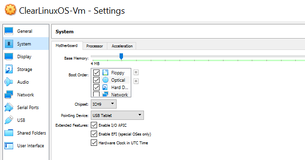

Install a Clear Linux* OS VM in VirtualBox*
This page explains how to create a virtual machine on the VirtualBox hypervisor with Clear Linux* OS as the guest operating system. These instructions support the Clear Linux OS live-server installer to create the Clear Linux OS virtual machine (VM).
Prerequisites
- Enable virtualization, such as Intel® Virtualization Technology (Intel® VT), on the host system from EFI/BIOS.
- Download and install VirtualBox version 6.0 or greater from VirtualBox using the VirtualBox Installation Instructions for your platform.
Download and extract the Clear Linux OS installer ISO
Download the
clear-<VERSION>-live-server.iso.xzof Clear Linux OS on the Downloads page.Validate the integrity of the downloaded image by checking the file hash and signatures. Refer to Validate signatures for detailed steps.
Decompress the downloaded image.
- On Windows you can use 7zip to extract the file by right-clicking the file to Extract Here (in the same directory)

Figure 1: 7zip extract here command
On Linux :
xz -d clear-<VERSION>-live-server.iso.xz
Delete the originally downloaded compressed file.
Create a new VirtualBox virtual machine
A new VM needs to be created in VirtualBox Manager where Clear Linux OS will be installed. General instructions for creating a virtual machine and details about using different settings are available in the VirtualBox manual section Creating Your First Virtual Machine.
Launch the VirtualBox Manager from your host system.
Click the New button to create a new VM.
Choose Expert mode.
On the Create Virtual Machine screen, enter the following settings:
Name: Choose name (e.g. ClearLinuxOS-VM).
Type: Linux
Version: Linux 2.6 / 3.x / 4.x (64-bit)
Hard disk: Create a virtual hard disk now
Memory size default: 2048 MB (Adjust appropriately.)
注解
Later, if you want to change the amount of RAM allocated, power down your VM. Return to
Settings > Systemand change Base Memory to the desired size.

Figure 2: Create Virtual Machine
Click Create.
On the Create Virtual Hard Disk screen, select:
- File location
- File size: 32.00 GB. Adjust size to your needs.
- Hard disk file type: VDI (VirtualBox Disk Image)
- Storage on physical hard disk:Dynamically allocated

Figure 3: Create Virtual Hard Disk
Click Create.
A new virtual machine will be created and appear in the VirtualBox Manager.
Click Settings to configure the Clear Linux OS VM.
In the left-hand menu, navigate to the menu.
On the Motherboard tab, select the Chipset menu, and then select . See Figure 4.
注解
You can select which chipset will be presented to the virtual machine. Consult the VM VirtualBox User Manual for more details.
In Enabled Features, check these boxes:
- Enable I/O APIC
- Enable EFI (special OSes only)
Figure 4: Settings > System
注解
By default, only 1 virtual CPU is allocated to the new VM. Consider increasing the number of virtual processors allocated to the virtual machine under Settings > System > Processor for increased performance.
Click OK.
{kind=link}
Install Clear Linux OS on the VirtualBox VM
Clear Linux OS is ready to be installed.
Mount the installation ISO
The Clear Linux OS installer ISO needs to be mounted as a virtual CD-ROM on the VM before powering the VM on.
From the ClearLinux-OS Settings menu at left, select Storage.
From Storage Devices, middle column, click the blue disk labeled Empty.
From the Attributes menu, click the blue CD disk next to the Optical Drive drop down menu and click Choose Virtual Optical Disk File…

Figure 5: Choose Virtual Optical Disk Drive
Where there appears Please choose a virtual optical disk file, select the ISO file and click Open.
Click OK to exit and return to the main VirtualBox Manager.
{kind=link}
Install Clear Linux OS with live-server installer
In the VirtualBox Manager, select virtual machine you created and click Start.

Figure 7: Start the installer
注解
To release the mouse cursor from the VM console window, press the right Ctrl key on the keyboard.
When Clear Linux Installer in boot manager appears, select Enter. Do not install the bundle desktop-autostart.
Follow the steps in Install Clear Linux* OS on bare metal with live server to install Clear Linux OS onto the VM virtual disk. Note:
- In Configure Installation Media, navigate top VBOX HARDDISK, and then select Confirm.
- In , create an administrative user.
- Do not install the bundle desktop-autostart.
When Clear Linux OS installation is complete, click Exit.
At the prompt, enter:
shutdown now
Unmount the ISO
The Clear Linux OS installer ISO needs to be unmounted to allow the VM to boot from the virtual hard disk.
Return to the VirtualBox Manager.
Click Settings to configure the Clear Linux OS VM.
From the VM Settings window, navigate to the Storage pane in the left menu.
From the middle Storage Devices column, click the blue CD disk labeled clear-<VERSION>-live-server.iso under the Controller: IDE.
From the Attributes column at right, in Optical Drive, select the blue CD icon beside and click Remove Disk from Virtual Drive.

Figure 8: Remove Disk from Virtual Drive
Click OK to exit the VM Settings menu and return to the main VirtualBox Manager.
Install VirtualBox Linux Guest Additions
Clear Linux OS provides Linux Guest Additions drivers for full compatibility using an install script in the kernel-lts (Long Term Support) bundle by Clear Linux OS.
From the VirtualBox Manager select the Clear Linux OS VM, and select Start.
In the VM Console, log in as the administrative user previously created.
注解
A message may appear: “A kernel update is available: you may wish to reboot the system.”
To update the kernel, enter:
sudo reboot
At initial login, enter the administrative user’s password and continue.
Validate the installed kernel is kernel-lts by checking the output of the uname -r command. It should end in .lts or .lts2018.
uname -r <VERSION>.lts
If the running kernel is not lts: install the LTS kernel manually, update the bootloader, and check again:
sudo swupd bundle-add kernel-lts clr-boot-manager set-kernel $(basename $(realpath /usr/lib/kernel/default-lts)) clr-boot-manager update reboot
Remove any kernel bundles that do not end in -lts or kernel-install to simplify and avoid conflicts:
sudo swupd bundle-list | grep kernel sudo swupd bundle-remove <NON-LTS-KERNEL>In the VM Console top menu, click Devices, and select Insert Guest Additions CD image… to mount the VirtualBox driver installation to the Clear Linux OS VM.

Figure 9: Insert Guest Additions CD image
If a dialogue appears, “VBx_GAs_6.0.8… Would you like to run it?”, select Cancel.
Instead, we provide a script to patch and install VirtualBox drivers on Clear Linux OS.
Open a Terminal and enter the script:
sudo install-vbox-lga
注解
Successful installation shows: “Guest Additions installation complete”. If drivers are already installed, don’t re-install them.
Shut down the system. Select .

Figure 10: Powering off a VirtualBox VM
Select Settings, Display.
In Graphics Controller, select VBoxSVGA to adjust screen size dynamically.

Figure 11: VirtualBox hardware acceleration error
In the VirtualBox Manager, select Start.
In the VM console, login and verify the VirtualBox drivers are loaded:
lsmod | grep ^vboxYou should see drivers loaded with names beginning with vbox: (e.g., vboxvideo, vboxguest).
Add desktop-autostart for a full desktop experience.
sudo swupd bundle-add desktop-autostart
Reboot the VM and log in with the administrative user.
sudo reboot
The Clear Linux OS VM running on VirtualBox is ready to develop and explore.
Troubleshooting
Problem: On a Microsoft* Windows* OS, VirtualBox encounters an error when trying to start a VM indicating VT-X/AMD-v hardware acceleration is not available on your system.

Figure 12: VirtualBox hardware acceleration error
Solution: First, double check the Prerequisites section to make sure Hardware accelerated virtualization extensions have been enabled in the host system’s EFI/BIOS.
Hardware accelerated virtualization, may get disabled for VirtualBox when another hypervisor, such as Hyper-V is enabled.
To disable Hyper-V execute this command in an Administrator: Command Prompt or Powershell, and reboot the system:
bcdedit /set {current} hypervisorlaunchtype off
To enable Hyper-V again, execute this command in an Administrator: Command Prompt or Powershell, and reboot the system:
bcdedit /set {current} hypervisorlaunchtype Auto